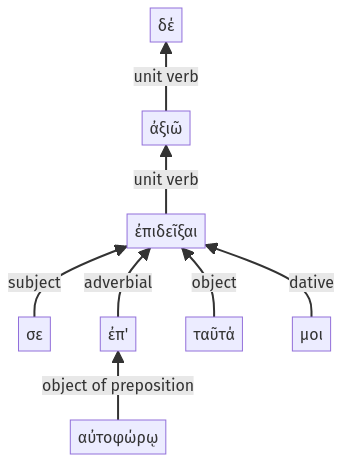

Lysias, Oration 1, 1.21.20-1.21.27a
1.21.9-1.21.19a | 1.21.28-1.21.40a
Sentence 55
1.21.20-1.21.27a
ἀξιῶ δέ σε ἐπ' αὐτοφώρῳ ταῦτά μοι ἐπιδεῖξαι:
1 ἀξιῶ
2 σε ἐπ' αὐτοφώρῳ ταῦτά μοι ἐπιδεῖξαι
ἀξιῶ δέ σε ἐπ' αὐτοφώρῳ ταῦτά μοι ἐπιδεῖξαι:
Highlighting:
- connecting words
- unit verb
- subject
- object
Color code:
- independent clause (level 1, transitive verb)
- infinitive in indirect statement (level 2, transitive verb)
